Guerreiros Confirmados
⚔️ Representantes da Humanidade

Adão
⏳ Época: Início dos Tempos
⚔️ Confronto: Rodada 02 vs Zeus
Capacidade divina de enxergar, desviar e copiar perfeitamente qualquer técnica ou golpe executado pelos deuses.

Lu Bu
⏳ Ano: 199 d.C. (Três Reinos)
⚔️ Confronto: Rodada 01 vs Thor
Dono de uma força bruta incomparável e de uma técnica devastadora com sua alabarda, capaz de dividir as nuvens no céu.

Kojiro Sasaki
⏳ Período: Edo (1583 - 1612)
⚔️ Confronto: Rodada 03 vs Poseidon
Evolui através da simulação mental de combate, permitindo prever as trajetórias e passos do inimigo antes mesmo deles atacarem.

Jack, o Estripador
⏳ Ano: 1888 (Era Vitoriana)
⚔️ Confronto: Rodada 04 vs Hércules
Enxerga a cor da alma e dos sentimentos das pessoas. Mestre em táticas furtivas que transformam qualquer objeto tocado em arma divina.

Raiden Tameemon
⏳ Período: Edo (1767 - 1825)
⚔️ Confronto: Rodada 05 vs Shiva
Músculos destrutivos e hiperdesenvolvidos. Ao liberar seus selos com o Volundr, atinge o ápice absoluto da força física humana.
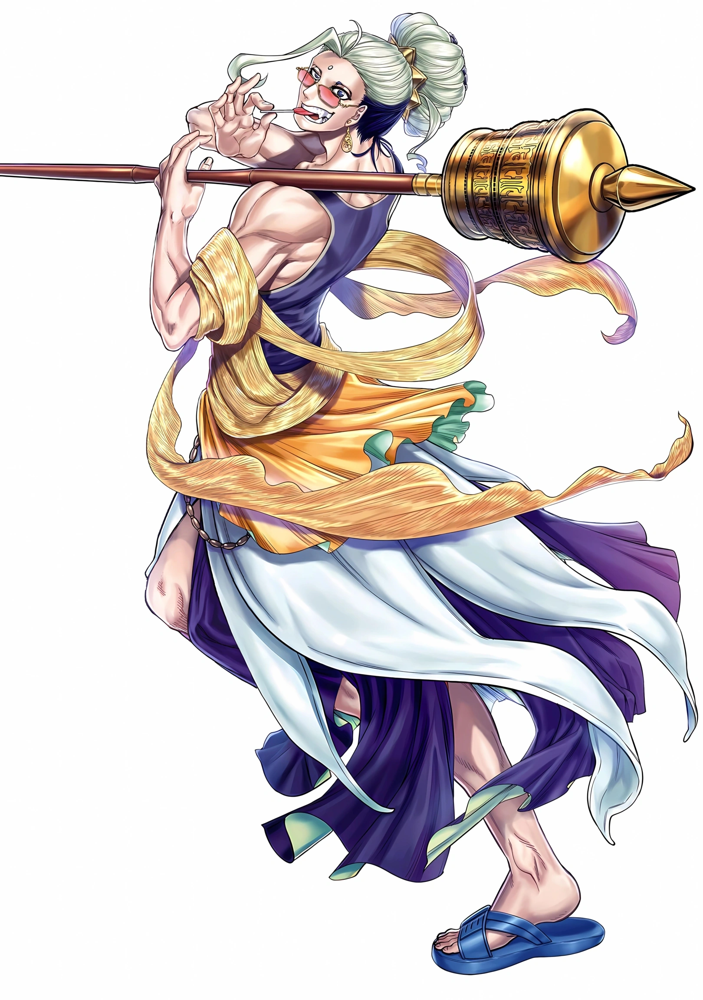
Buddha
⏳ Época: Século V a.C.
⚔️ Confronto: Rodada 06 vs Zerofuku/Hajun
Consegue ver o fluxo das intenções da alma e do destino segundos antes de acontecerem, prevendo o futuro perfeitamente.

Qin Shi Huang
⏳ Dinastia: Qin (221 - 210 a.C.)
⚔️ Confronto: Rodada 07 vs Hades
Enxerga as estrelas e os pontos de fluxo de energia nos corpos dos oponentes, atingindo-os para enfraquecer totalmente seus golpes.

Nikola Tesla
⏳ Ano: 1856 - 1943
⚔️ Confronto: Rodada 08 vs Beelzebub
Não usa magia, mas sim ciência pura. Cria zonas de gravidade zero e realiza teletransportes de alta velocidade na arena.

Leônidas
⏳ Ano: 480 a.C. (Grécia Antiga)
⚔️ Confronto: Rodada 09 vs Apollo
Líder lendário movido por puro orgulho tático. Utiliza um escudo metamórfico acorrentado que muda de forma para o ataque.

Okita Souji
⏳ Época: Bakumatsu (1842 - 1868)
⚔️ Confronto: Rodada 10 vs Susanoo
Prodígio supremo da espada. Força o batimento do próprio coração ao extremo para atingir velocidades que superam os reflexos de um deus.

Simo Häyhä
⏳ Ano: 1905 - 2002
⚔️ Confronto: Rodada 11 vs Loki
O maior franco-atirador militar. Possui paciência cirúrgica e precisão infalível à distância usando miras de ferro sob a neve.

Sakata Kintoki
⏳ Época: Período Heian
⚔️ Confronto: Rodada 12 (Mangá)
Lenda folclórica dotada de um coração puro e vigor sobre-humano. Convocado para agir diretamente nos mistérios dos bastidores do Helheim.
🛡️ As 13 Irmãs Valquírias
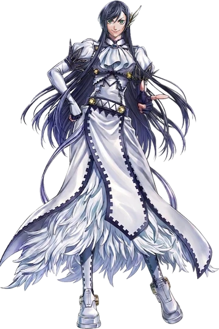
Brunhilde
🧠 Função: Mente do Torneio
🔥 Status: Ativa / Comandante
A mais velha das irmãs. Salvou a raça humana ao ativar o Ragnarok. Ela guia e escolhe a dedo cada um dos 13 guerreiros mortais.
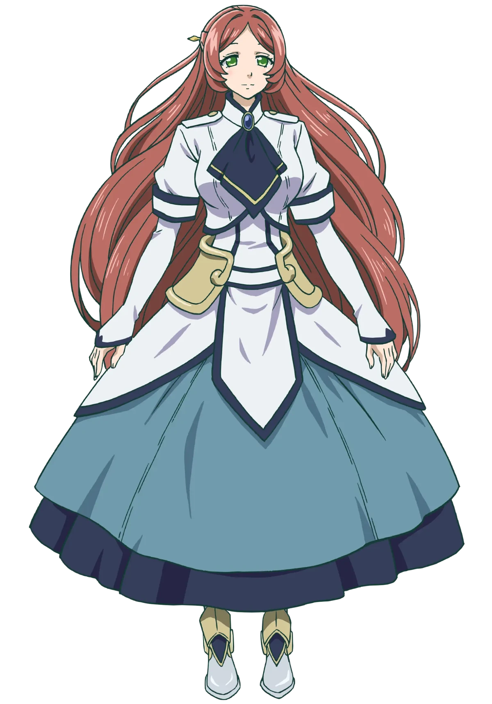
Randgriz
👤 Parceiro: Lu Bu
⚔️ Rodada: Rodada 01 vs Thor
Transformou sua alma na lendária lança de Lu Bu, possuindo a habilidade passiva de quebrar e perfurar qualquer defesa ou escudo divino.
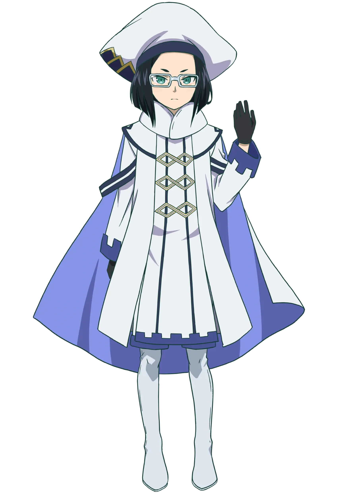
Reginleif
👤 Parceiro: Adão
⚔️ Rodada: Rodada 02 vs Zeus
Fusão perfeita com o Pai da Humanidade. Manifestou-se como um soco-inglês de ferro capaz de ferir o Rei do Cosmos com golpes físicos diretos.
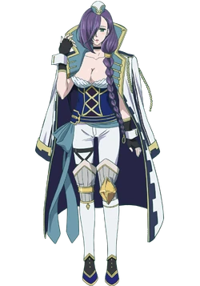
Hrist
👤 Parceiro: Kojiro Sasaki
⚔️ Rodada: Rodada 03 vs Poseidon
Possui uma dupla personalidade extrema. Quando sua espada original foi quebrada por Poseidon, ela renasceu manifestando duas espadas letais.
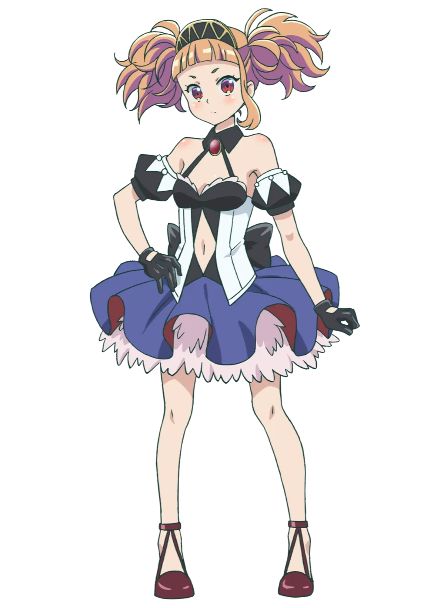
Hlökk
👤 Parceiro: Jack, o Estripador
⚔️ Rodada: Rodada 04 vs Hércules
Forçada a fazer o elo. Suas luvas dão o poder de transformar absolutamente qualquer objeto ou estrutura tocada em uma arma divina fatal.
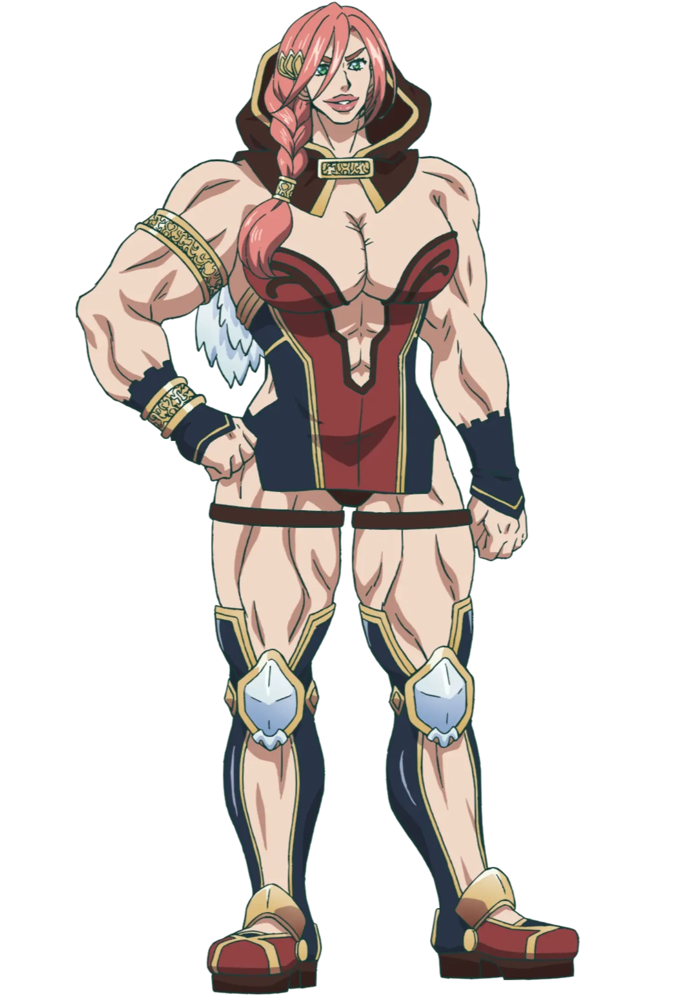
Thrud
👤 Parceiro: Raiden Tameemon
⚔️ Rodada: Rodada 05 vs Shiva
A valquíria gigante de puro coração. Ela se transformou no cinturão de sumô que permitiu a Raiden controlar e liberar 100% dos seus músculos sem morrer.
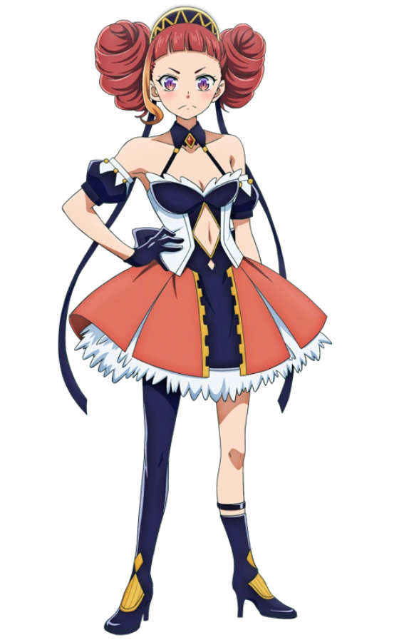
Alvitr
👤 Parceiro: Qin Shi Huang
⚔️ Rodada: Rodada 07 vs Hades
Irmã gêmea de Hlökk. Tornou-se uma armadura e manopla com foco absoluto em defesa, capaz de suportar e refletir impactos massivos de Hades.
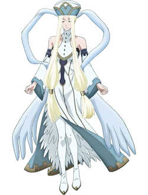
Gôndul
👤 Parceiro: Nikola Tesla
⚔️ Rodada: Rodada 08 vs Beelzebub
Ofereceu seu corpo físico inteiro para servir como núcleo de energia espiritual do traje de Tesla, transformando ciência pura em poder divino.
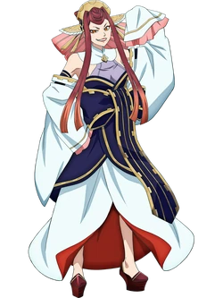
Geiravör
👤 Parceiro: Rei Leônidas
⚔️ Rodada: Rodada 09 vs Apollo
Possui o mesmo temperamento orgulhoso e guerreiro de Esparta. Converteu sua alma em um escudo tático que muda de forma para uma maça de assalto.
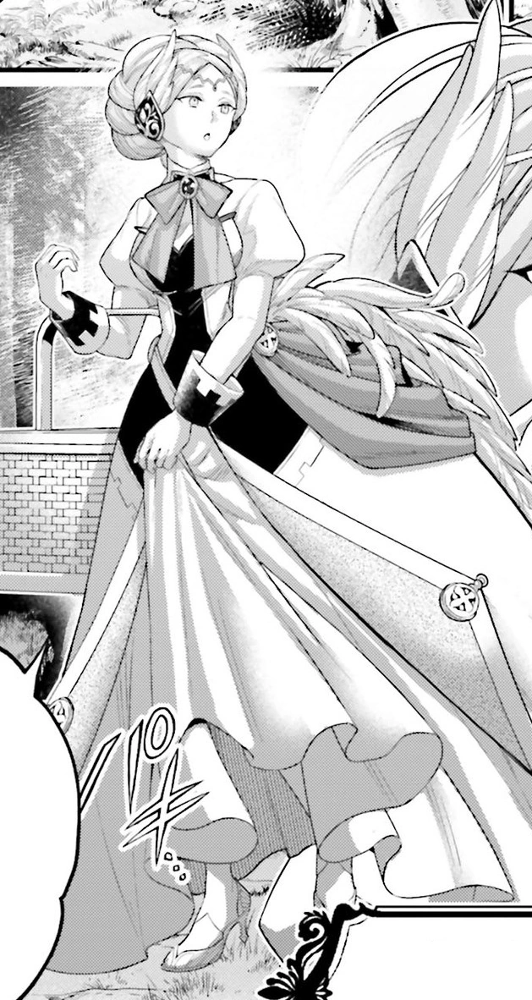
Geirölul
👤 Parceiro: Simo Häyhä
⚔️ Rodada: Rodada 11 vs Loki
Fundiu sua alma com o rifle de miras de ferro de Simo Häyhä, concedendo precisão geométrica e balas capazes de atravessar corpos de deuses na neve.
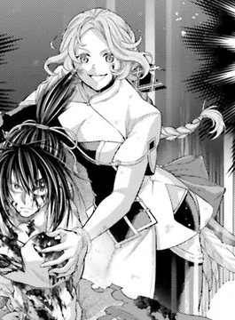
Kuraqu
👤 Parceiro: Okita Souji
⚔️ Rodada: Rodada 10 vs Susanoo
Sua fusão manifestou a lâmina mais afiada do submundo japonês, capaz de canalizar a velocidade absurda e a pressão sanguinolenta do coração de Okita.
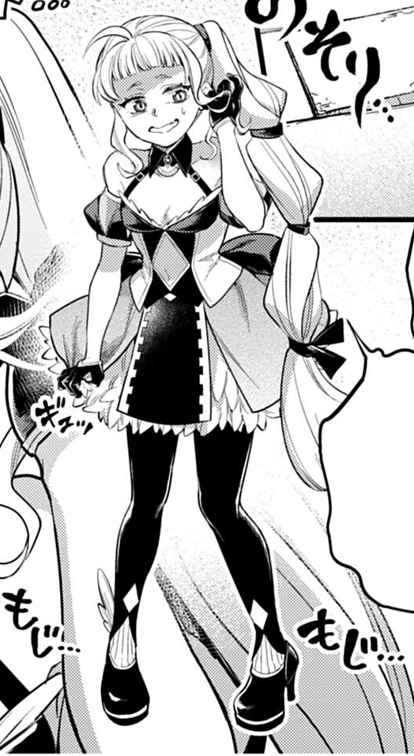
Skeggjöld
👤 Parceiro: Sakata Kintoki
⚔️ Rodada: Rodada 12 (Mangá)
Manifestou-se como o grandioso machado folclórico de Kintoki, focado em quebrar barreiras mágicas e abrir portais nas profundezas do Helheim.
⚡ Deuses Representantes
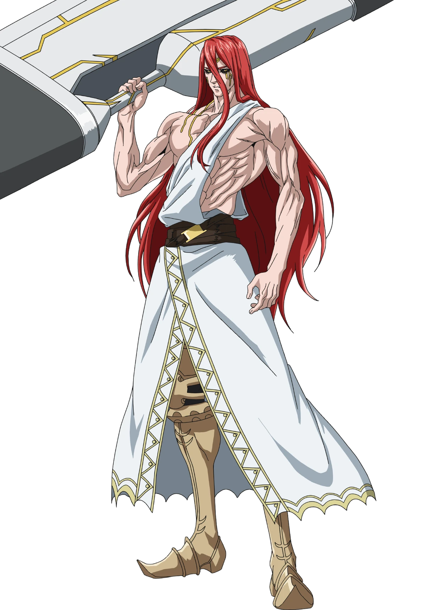
Thor
Confronto: Rodada 01 vs Lu Bu
Arma Divina: Mjolnir & Járngreipr
Geirröd, o golpe esmagador que desperta o poder vivo do seu martelo gigante.
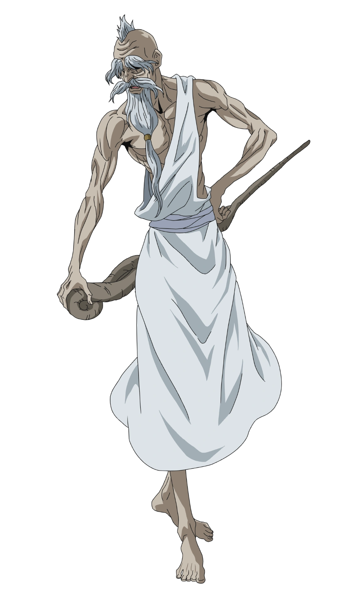
Zeus
Confronto: Rodada 02 vs Adão
Estilo: Punhos Nus
O Soco que Supera o Tempo e a forma física compacta "Adamas" focada em desgaste absoluto.
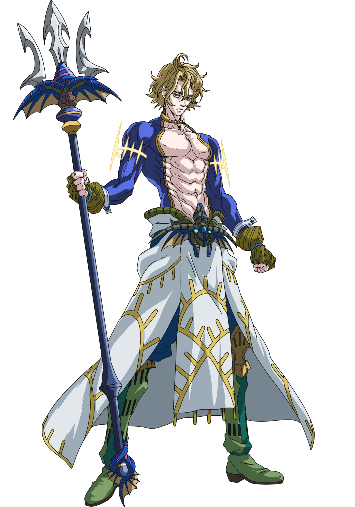
Poseidon
Confronto: Rodada 03 vs Kojiro Sasaki
Arma Divina: Tridente dos Mares
Anfítrite e Medusa Alope Demeter, ataques com velocidade de estocada inalcançável.
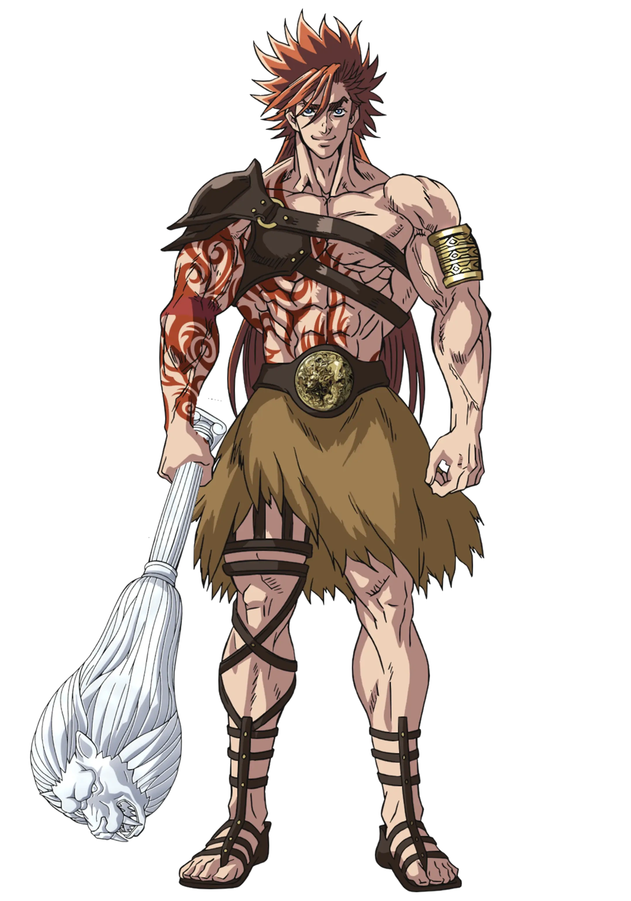
Hércules
Confronto: Rodada 04 vs Jack, o Estripador
Arma Divina: Clava Metamórfica
Êxodo dos 12 Trabalhos, usando técnicas baseadas nos monstros mitológicos derrotados.
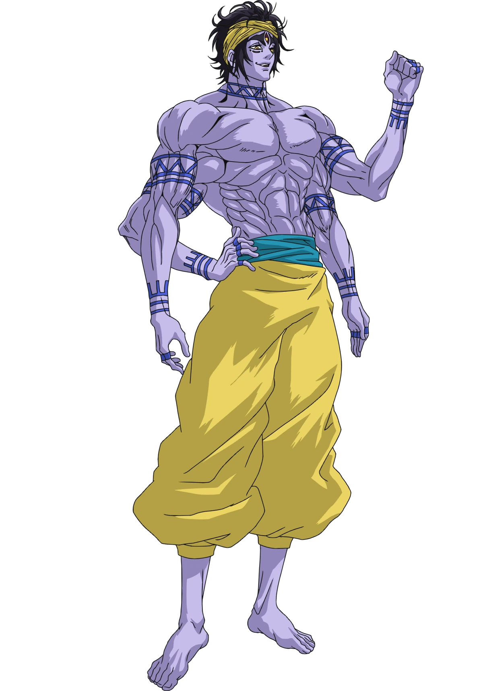
Shiva
Confronto: Rodada 05 vs Raiden Tameemon
Atributo: Quatro Braços
Dança Oculta Incendiária (Tandava Karma), que queima o próprio corpo para velocidade insana.
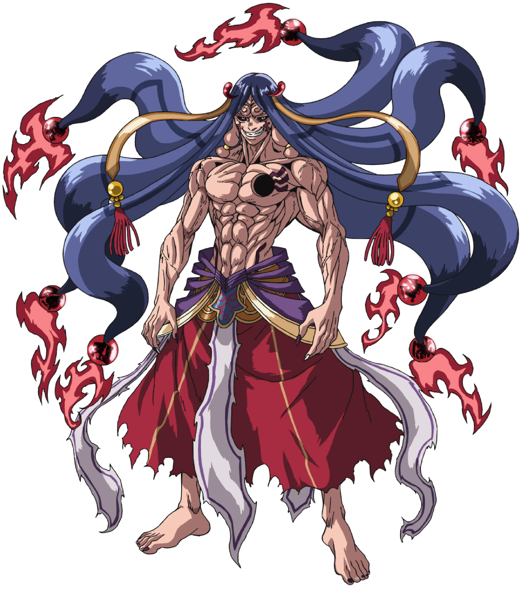
Zerofuku
Confronto: Rodada 06 vs Buddha
Arma Divina: Clava do Infortúnio
Absorve a infelicidade e rancor ao redor para agigantar sua arma infinitamente.
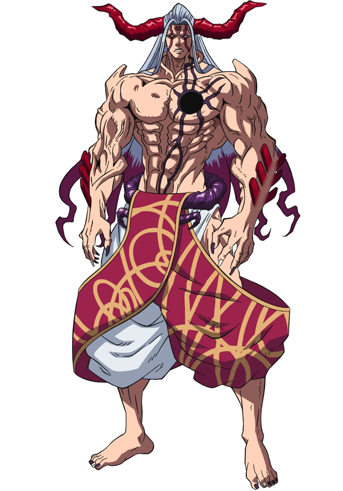
Hajun
Confronto: Rodada 06 vs Buddha
Atributo: Modificação Corporal
Transforma seus próprios braços e ossos em brocas e lâminas físicas indestrutíveis.
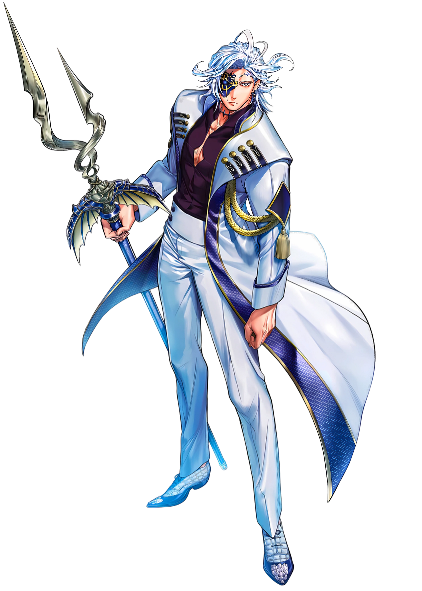
Hades
Confronto: Rodada 07 vs Qin Shi Huang
Arma Divina: Bidente Fundido
Alfeu Pluton, usando seu próprio sangue divino para fortalecer e dar vida à lança.
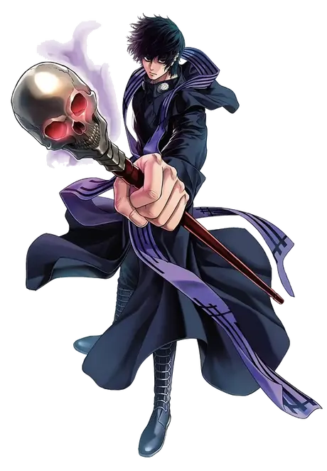
Beelzebub
Confronto: Rodada 08 vs Nikola Tesla
Arma Divina: Cajado de Apomyius
Manipula ondas de alta frequência vibratória para escudos e ataques cortantes invisíveis.
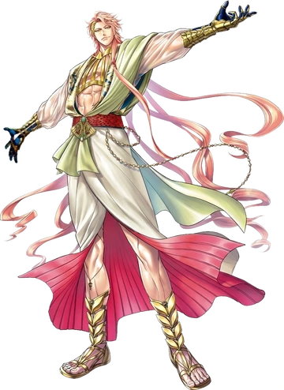
Apollo
Confronto: Rodada 09 vs Rei Leônidas
Arma Divina: Fios de Luz / Arco de Artemis
Dispara flechas de pura energia solar perfurantes na velocidade da luz.
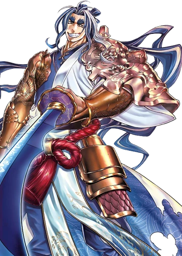
Susanoo-no-Mikoto
Confronto: Rodada 10 vs Okita Souji
Arma Divina: Espada Sagrada Shinkage
Corte do Vácuo Celestial, unificando todos os estilos de espada humanos.
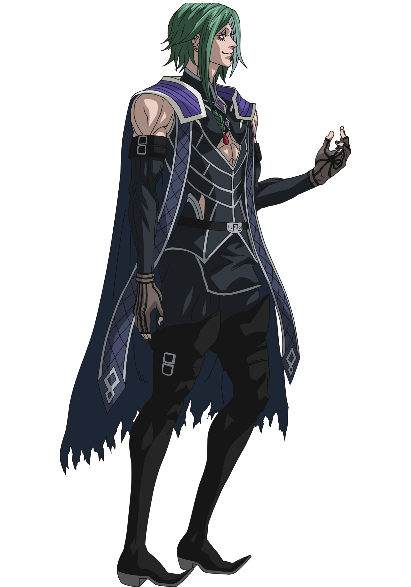
Loki
Confronto: Rodada 11 vs Simo Häyhä
Arma Divina: Correntes Mágicas Ocultas
Cria portais dimensionais e ilusões completas para confundir os rivais.
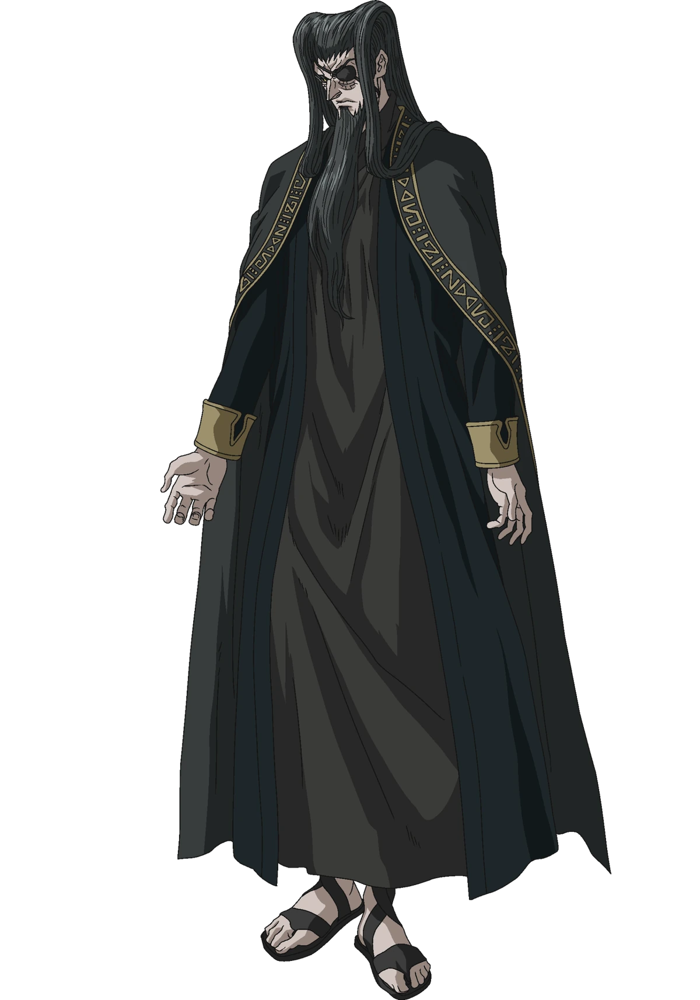
Odin
Confronto: Rodada 12 vs Sakata Kintoki
Arma Divina: Lança Gungnir
Emana uma aura opressora de decomposição biológica e morte pura.
Placar: Lutas do Ragnarok
Histórico de Confrontos Detalhado
Lu Bu VS Thor
⏱️ 16min 28s🛡️ Volundr: Randgriz (Alabarda Sky Piercer)
Um confronto de força bruta pura. Lu Bu conseguiu aguentar os golpes de Thor e até feri-lo, mas após o despertar do Mjolnir, as pernas do humano quebraram sob a pressão. Lu Bu foi superado pelo poder devastador do deus.
Adão VS Zeus
⏱️ 07min 13s🛡️ Volundr: Reginleif (Soco-Inglês Sagrado)
Usando os "Olhos do Senhor", Adão copiou todos os golpes de Zeus. Zeus ativou a forma "Adamas" numa batalha extrema de desgaste. Os olhos de Adão estouraram, mas ele continuou socando, morrendo de pé por puro amor aos filhos.
Kojiro Sasaki VS Poseidon
⏱️ 13min 07s🛡️ Volundr: Hrist (Katana Dupla Divina)
Poseidon atacou com velocidade assustadora, enquanto Kojiro previa os movimentos mentalmente. Após ter a espada quebrada, seu Volundr se dividiu em duas espadas, permitindo-o evoluir seu estilo e fatiar o Deus dos Mares.
Jack, o Estripador VS Hércules
⏱️ 26min 57s🛡️ Volundr: Hlökk (Luvas da Transmutação)
Numa Londres artificial, Jack revelou que seu verdadeiro Volundr eram suas luvas, que transformavam tudo em arma divina. Usando armadilhas e mentiras, enganou e empalou Hércules com as próprias mãos embebidas em sangue divino.
Raiden Tameemon VS Shiva
⏱️ 12min 14s🛡️ Volundr: Thrud (Mawashi Divino)
Raiden liberou seus músculos e destruiu dois braços de Shiva. Porém, o líder hindu ativou sua Dança Oculta Incendiária, queimando seu corpo para ganhar velocidade e desferir chutes de chamas letais.
Buddha VS Zerofuku / Hajun
⏱️ 21min 37s🛡️ Volundr: Grande Lótus do Nirvana (Fusão com Zerofuku)
Buddha lutou pelos humanos e salvou Zerofuku, mas o corpo do deus foi tomado pelo Rei Demônio Hajun. Buddha perdeu um olho, mas fundiu sua arma com a alma de Zerofuku para cortar Hajun ao meio.
Qin Shi Huang VS Hades
⏱️ 22min 28s🛡️ Volundr: Alvitr (Armadura de Ombro Real)
Hades buscou vingança por Poseidon com estocadas brutais. Qin Shi Huang, enxergando o fluxo de energia (Ki), redirecionou a força do deus. Mesmo perdendo um braço, quebrou a lança divina de Hades e o venceu.
Nikola Tesla VS Beelzebub
⏱️ 18min 06s🛡️ Volundr: Gôndul (Super Traje Automaton β)
Tesla usou uma armadura mecânica de alta tecnologia, criando gravidade zero e se teletransportando. Porém, o intelecto sombrio e as vibrações destrutivas de Beelzebub decifraram a ciência, superando Tesla.
Leonidas VS Apollo
⏱️ 09min 31s🛡️ Volundr: Geiravör (Escudo Metamórfico Aspis)
O Rei de Esparta enfrentou o Deus do Sol com um escudo mutável acorrentado. Apollo ativou seu arco de luz na velocidade da luz. Leonidas contra-atacou ferindo o deus, mas teve seu escudo estilhaçado no impacto final.
Okita Souji VS Susanoo-no-Mikoto
⏱️ 15min 23s🛡️ Volundr: Kuraqu (Katana Onislayer Divina)
Duelo épico de esgrima nas ruas de Kyoto reconstruídas na arena. Susanoo demonstrou o tempo e corte do vácuo, mas Okita levou seu coração doente ao limite máximo, atingindo velocidade divina para vencer.
Simo Häyhä VS Loki
⏱️ 19min 42s🛡️ Volundr: Geirölul (Rifle Sniper Divino)
O Deus da Trapaça tentou estraçalhar o casaco branco de Simo criando centenas de illusions. Porém, demonstrando uma paciência divina e audição absoluta, o Franco-Atirador calculou a trajetória real através do som dos passos e disparou uma bala de Volundr certeira, atravessando a cabeça de Loki.